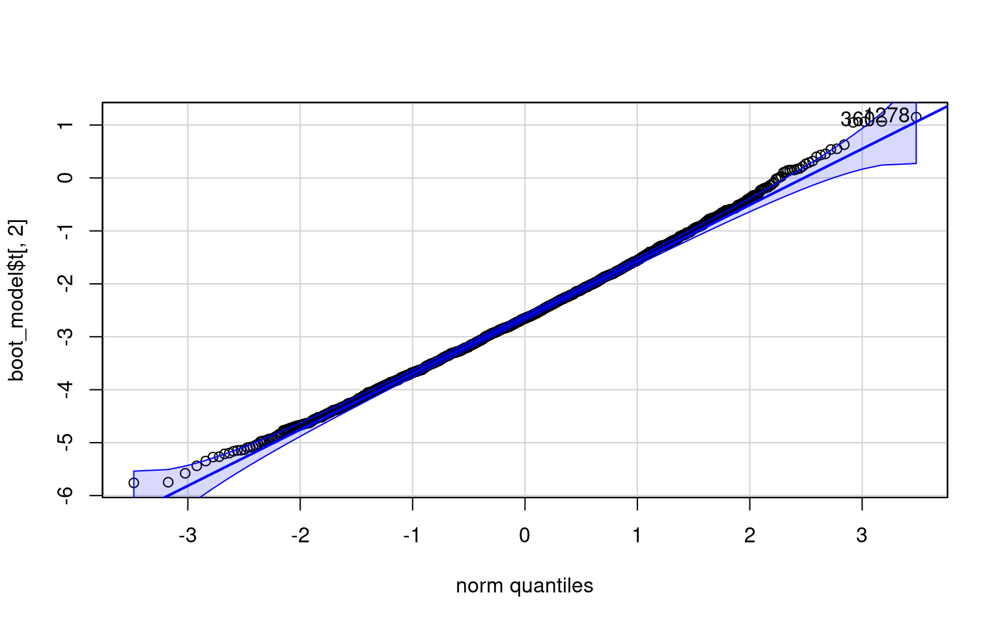
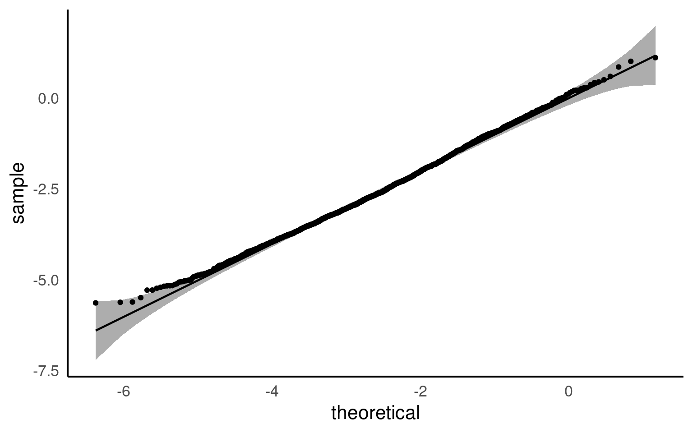
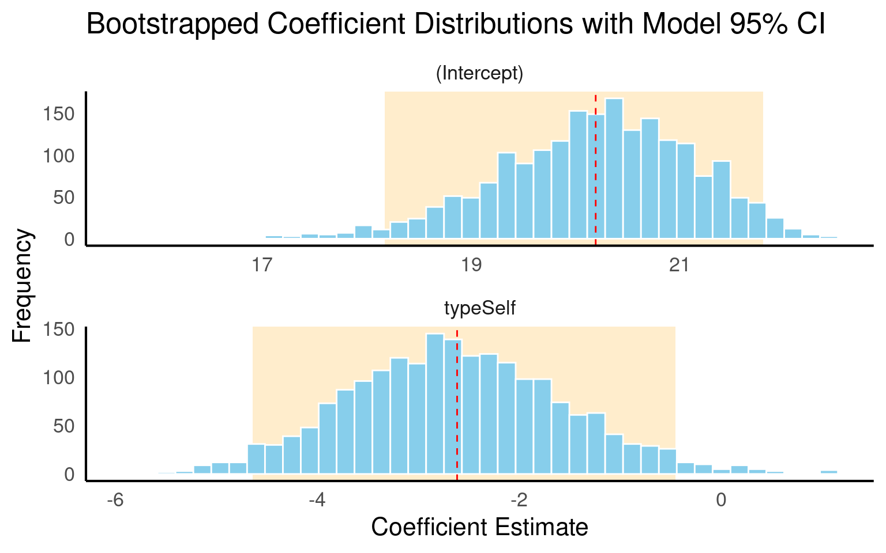

8 Model diagnostics
9 Assumption checking
After conducting a linear model analysis, we often find ourselves with results and inferences. However, before we can fully trust our analysis, it’s essential to check whether the underlying assumptions of the model are adequately met. In this chapter, we will focus on two critical assumptions: the normality of residuals and the homogeneity of variance. We will also discuss the impact of outliers on our model and the formal tests available for these assumptions.
9.1 Assumption 1: Normality of Residuals
9.1.1 Understanding Residuals
Residuals are the differences between observed values and the fitted values produced by the model. In our case, this involves analyzing plant heights against treatment means. The normality of residuals is crucial because the linear model relies on this assumption to compute standard errors, which in turn affects confidence intervals and hypothesis testing.
9.1.2 Graphical Checks for Normality
To visually assess the normality of residuals, we can utilize various plotting functions in R. Two effective methods are:
Quantile-Quantile (QQ) Plot: This plot compares the distribution of residuals to a theoretical normal distribution. If the residuals follow a normal distribution, they should approximately align along a diagonal line.

9.1.3 Formal test of Normality
9.2 Assumption 2: Homogeneity of Variance
9.2.1 Assessing Equal Variance
The assumption of homogeneity of variance (or homoscedasticity) states that the residual variance should be constant across all levels of the independent variable(s). This is important because linear models often pool variance across groups to make inferences.
9.2.2 Graphical Checks for Homogeneity
To assess this assumption, we can plot the residuals against the fitted values:

9.2.3 Formal Tests for Homogeneity of Variance
To formally test for homogeneity of variance, we can use:
Breusch-Pagan Test: This test evaluates whether the variance of residuals is constant.
9.3 Assumption 3: Linearity
Linear regression assumes a linear relationship between the predictor(s) and the response variable. If this assumption is violated, the model may produce biased or inaccurate predictions.
9.3.1 Graphical checks for linearity
To assess this assumption, we can plot the residuals against the fitted values:

Checking for linearity isn’t really an issuue when comparing groups - it will feature when carrying out regression:
Limited Data Points: With only two levels, you have a limited number of data points, which may not adequately capture the underlying relationship. This makes it hard to assess linearity visually or statistically.
No Intermediate Values: A binary predictor means there are no intermediate values to examine. This limits the ability to see a continuous trend or relationship.
9.4 Outliers and Their Impact
Outliers can significantly affect the estimates of a model, influencing both residuals and overall model fit. Therefore, it’s essential to assess the presence and impact of outliers on our analysis.
9.4.1 Identifying Outliers
To identify outliers, we can employ Cook’s Distance, which measures the influence of each data point on the model fit. Large values of Cook’s Distance suggest that a point may be having an outsized effect.
9.4.2 Formal Tests for Outliers
9.5 Multicollinearity
Check: Assess whether predictors are highly correlated with each other, which can affect the stability of coefficient estimates. In this model we only have a single predictor, so this test is not required - we will revisit this with more complex models later.
9.6 Summary
So what can we determine from this analysis? Our model is not perfect, however it is reasonably good. Many of the statistical violations are likely because of the small sample size - and collecting more data might be a good idea.
Linear models are powerful tools for analyzing relationships between variables, but their validity hinges on several key assumptions. Checking these assumptions is crucial to ensure the reliability and interpretability of the model’s results.
By systematically checking these assumptions, researchers can ensure that their linear models are robust, reliable, and capable of providing meaningful insights into the relationships between variables. Ignoring these checks can lead to flawed analyses and misguided conclusions, underscoring the necessity of thorough model evaluation.
In this chapter, we covered essential steps for checking linear model assumptions, including:
Assessing the normality of residuals through QQ plots and formal tests (e.g., Shapiro-Wilk).
Evaluating homogeneity of variance using residual plots and formal tests (e.g., Breusch-Pagan).
Testing for model linearity
Identifying outliers through Cook’s Distance.
We can check all our model assumptions at once, as well as looking at individual plots as shown above.


10 Bootstrapping & Permutation tests
Bootstrapping is a powerful, assumption-light statistical method used to estimate the uncertainty of an estimate — such as a mean, median, regression coefficient, or difference between groups — when traditional methods may not be reliable.
10.1 How it works
Bootstrapping is a resampling-based method that helps estimate the uncertainty of a statistic — such as a group difference or a regression coefficient — without relying on strict assumptions like normally distributed residuals or equal variances.
In a typical linear model, the accuracy of confidence intervals and p-values depends on assumptions of normality and homoscedasticity. These assumptions often break down in small samples, which can lead to misleading inferences.
Bootstrapping addresses this by:
Repeatedly resampling (with replacement) from the original dataset
Recomputing the model or statistic on each resample
Using the resulting distribution of estimates to calculate confidence intervals — such as a 95% CI based on the 2.5th and 97.5th percentiles of the bootstrap distribution variability you’d see if you could collect many new samples from the population.
Because it simulates the sampling process directly from the data, bootstrapping:
Does not require normality
Is more robust to outliers
Helps address small-sample limitations
However, it’s important to note that bootstrapping does not fix biased data. If the original sample is unrepresentative or poorly collected, bootstrapping will reinforce that bias — not correct it.
In our case, assumption checks revealed some heteroscedasticity and deviation from normality, likely due to small sample size. Bootstrapping allows us to continue with inference in a principled way, producing confidence intervals derived directly from the observed data distribution, rather than relying on theoretical models that may not hold.
10.2 Practice
We’ll use the model lsmodel1, which compares plant heights across treatment type.
We’ll resample rows of the dataset (case resampling), refit the model each time, and store the coefficients - for ease of use we will use the car package, but there are lots of ways to perform bootstrapping:
library(car)
set.seed(123)
boot_model <- car::Boot(lsmodel1,
method = "case",
R = 2000)
summary(boot_model)
car::qqPlot(boot_model$t[,2])
| R | original | bootBias | bootSE | bootMed | |
|---|---|---|---|---|---|
| (Intercept) | 2000 | 20.191667 | 0.0010769 | 0.927399 | 20.252976 |
| typeSelf | 2000 | -2.616667 | 0.0009423 | 1.071999 | -2.652149 |
[1] 1278 360library(parameters)
library(qqplotr)
set.seed(123)
bootstrap_parameters(lsmodel1, iterations = 2000)
parameters_model <- bootstrap_model(lsmodel1, iterations = 2000)
ggplot(parameters_model, aes(sample = typeSelf))+
stat_qq_band() +
stat_qq_line() +
stat_qq_point()
| Parameter | Coefficient | CI_low | CI_high | p |
|---|---|---|---|---|
| (Intercept) | 20.252976 | 18.174792 | 21.7941866 | 0.000 |
| typeSelf | -2.652149 | -4.639655 | -0.4578413 | 0.024 |
10.2.1 Get Confidence intervals
Bootstrap bca confidence intervals
2.5 % 97.5 %
(Intercept) 17.518029 21.58435952
typeSelf -4.442568 -0.08401808| term | statistic | bias | std.error | conf.low | conf.high |
|---|---|---|---|---|---|
| (Intercept) | 20.191667 | 0.0010769 | 0.927399 | 18.166877 | 21.7968055 |
| typeSelf | -2.616667 | 0.0009423 | 1.071999 | -4.645214 | -0.4467236 |
set.seed(123)
b <- bootstrap_parameters(lsmodel1, iterations = 2000)
b
emmeans::emmeans(b, specs = ~ type)| Parameter | Coefficient | CI_low | CI_high | p |
|---|---|---|---|---|
| (Intercept) | 20.252976 | 18.174792 | 21.7941866 | 0.000 |
| typeSelf | -2.652149 | -4.639655 | -0.4578413 | 0.024 |
type emmean lower.HPD upper.HPD
Cross 20.3 18.4 21.9
Self 17.6 16.5 18.5
Point estimate displayed: median
HPD interval probability: 0.95 10.2.2 Visualise bootstrap distributions
# Get bootstrapped coefficients from car::Boot()
boot_coefs <- boot_model$t
# Long format for plotting
boot_df <- as_tibble(boot_coefs)
boot_long <- boot_df %>%
pivot_longer(cols = everything(), names_to = "term", values_to = "estimate")
# 95% confidence intervals
quantile <- boot_long |>
group_by(term) |>
summarise(min = quantile(estimate, c(0.025)),
max = quantile(estimate, c(0.975)))ggplot(boot_long, aes(x = estimate)) +
# Add shaded CI region from original model
geom_rect(data = quantile,
aes(xmin = min, xmax = max, ymin = -Inf, ymax = Inf),
fill = "orange", alpha = 0.2, inherit.aes = FALSE) +
# Add histogram of bootstrap estimates
geom_histogram(bins = 40, fill = "skyblue", color = "white") +
# Facet by term
facet_wrap(~term, scales = "free", ncol = 1) +
# Add dashed line for original coefficient
geom_vline(data = orig_ci,
aes(xintercept = estimate), color = "red", linetype = "dashed") +
labs(
title = "Bootstrapped Coefficient Distributions with Model 95% CI",
x = "Coefficient Estimate",
y = "Frequency"
)
10.3 Permutation testing
Let’s now turn to permutation testing to evaluate the statistical significance of the group difference.
10.3.1 Logic
Permutation tests:
Randomly shuffle the type labels
Refit the model with these shuffled labels
Recalculate the typecross coefficient each time
Compare the observed coefficient to the distribution of permuted coefficients
10.3.2 Manual Permutation
# Observed test statistic
obs_stat <- coef(lsmodel1)["typeSelf"]
# Run permutation test
set.seed(123)
perm_stats <- replicate(5000, {
shuffled <- sample(darwin$type)
perm_data <- darwin
perm_model <- lm(height ~ shuffled, data = perm_data)
coef(perm_model)[[2]]
})
# Permutation-based p-value
perm_pval <- mean(abs(perm_stats) >= abs(obs_stat))
perm_pval[1] 0.021